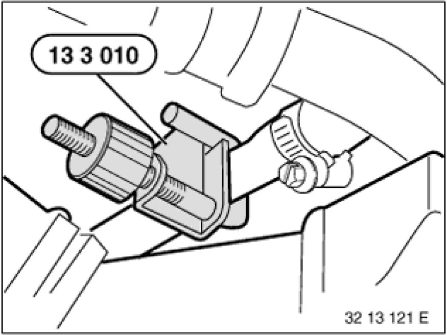
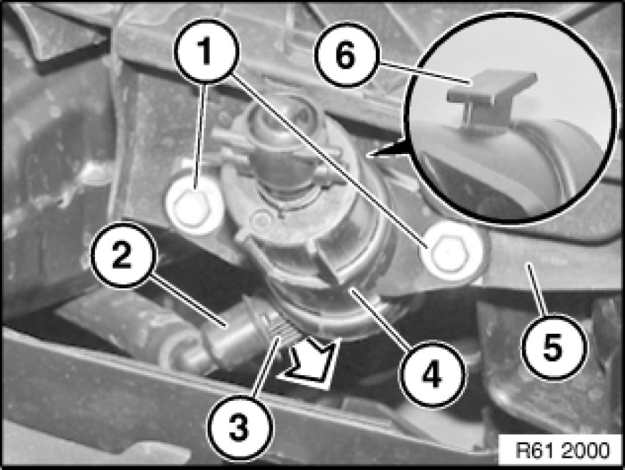

Removing and Installing/Replacing High-Pressure Nozzle (Housing) of Headlight Washer System (M / Aerodynamic Kit) on Left
61 67 120 - Removing and installing/replacing high-pressure nozzle (housing) of headlight washer system (M / aerodynamic kit) on left

Special tools required:
- 13 3 010 13 3 010 Hose Clip

Necessary preliminary tasks:
- Remove bumper trim 51 11 156 - Removing and installing/replacing front bumper trim (M Technic aerodynamic kit)

To prevent excessive escape of washer fluid, seal off end of high-pressure line with special tool 13 3 010 13 3 010 Hose Clip.
Catch any escaping washer fluid if necessary.

Release screws (1) and feed high-pressure nozzle of headlight washer system (4) out of holder (5).
Raise retaining clip (3) in direction of arrow and detach high-pressure line (2) from high-pressure nozzle of headlight washer system (4).
Installation:
Keep plug connection for high-pressure nozzle (4) and high-pressure line (2) clean and free from grease.
Make sure high-pressure line (2) is correctly engaged on high-pressure nozzle (4).
Guide (6) of high-pressure nozzle (4) must be threaded into associated mounting of holder (5).
Carry out a function test before fitting bumper trim.
If necessary, top up washer fluid.

Replacement:
Remove spray nozzle (nozzle head) Removing and Installing/Replacing Spray Nozzles (Nozzle Heads) of Headlight Washer System on Left or Right (M/Aerodynamic Kit).